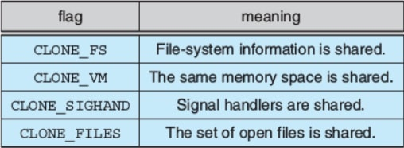
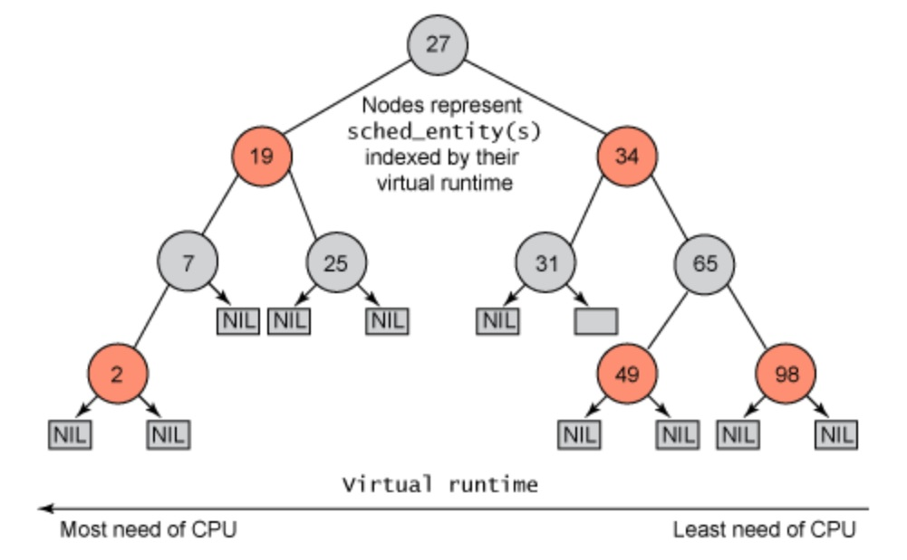
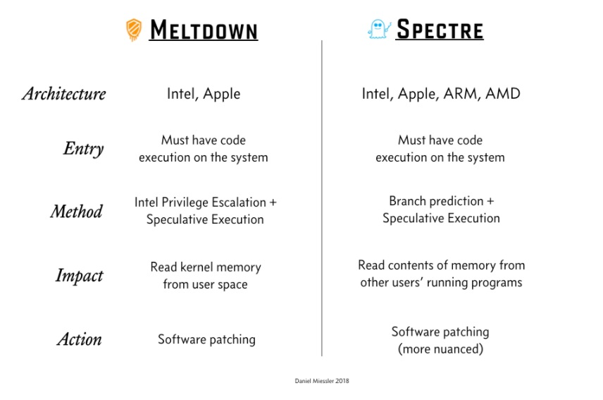

Kitab Linux
Oleh: Sammy, Joseph, Fahmi, Gery, Tanor, Ody, Hagai, Eka
Sejarah Linux
Sebuah kisah yang mengubah umat manusia

Pada awal mula, setelah Bell Labs cabut dari development mutex, Ken Thompson menciptakan UNIX dan Dennis Richie menciptakan bahasa C. Bell Labs adalah anak perusahan dari, tapi karena hukum monopoli sehingga perusahaan tersebut dipecah dan banyak asetnya dipindahkan kemana mana.
Beberapa vendor yang memiliki lisensi UNIX membuat implementasinya sendiri, beserta beberapa universitas dengan mahasiswanya masing - masing. AT&T melarang penggunaan UNIX untuk menjadi bahan pembelajaran di Universitas yang tidak memiliki lisensi UNIX. System yang merupakan standar dari UNIX di dunia, turunannya seperti IBM EIX, Sans Solaris, HP-UX.
Sementara itu, University of California, Berkeley, mahasiswanya membuat banyak modifikasi pada UNIX yaitu BSD hingga versi 4. Pada tahun 90-an, muncul pertanyaan siapa yang memiiki hak cipta terhadap UNIX, dan Berkeley tidak mampu mendistribusikan BSD karena memiliki sebagian code UNIX. Lalu Berkeley mendistribusikan BSD yang pure tanpa code UNIX.
Design Principles
Kernel
kernel melakukan berbagai abstraksi dari sebuah sistem operasi, seperti : Signal, System calls, Process dan Sheduler, Virtual Memory, File systems, Network protocols, Character Device Drivers, Block Device Drivers, Network Device Drivers, Trap dan Faults, Physical Memory, Interrupts.
System Libraries
merupakan kumpulan fungsi-fungsi standar yang dipakai oleh aplikasi untuk dapat berinteraksi dengan kernel. Fungsi - fungsi ini mengimplemen fungsionalitas yang tidak membutuhkan privilage penuh dari kernel code. Library yang paling penting : C library (libc). System libraries memberikan berbagai fungsionalitas, baik dari syscall yang paling basic hingga kompleks, seperti menjalankan syscall untuk mentransfer kontrol dari user mode ke kernel mode, file handling, algoritma sorting, fungsi matematis, manipulasi string.
System Utilities
program yang menjalankan tugas khusus secara tersendiri. Beberapa utilitas dijalankan sekali saja dan kemudian melakukan konfigurasi beberapa aspek pada sistem. Yg lainnya, yaitu daemons dijalankan secara permanen : contoh, menerima koneksi (http daemon, ftp, ssh, telnet, bisa juga service, dkk) serta menerima logon requests, mengupdate log file, dan masih banyak lagi. Salah satu system utilities yang paling penting yaitu Shell, sebagai standard command line interface untuk UNIX. Kebanyakan linux pakai BASH (Bourne Again Shell). Ada jg shell yang lain sepert ZSH, yaitu Z shell. Shell dipakai untuk menerima inputan dari user dan kemudian menjalankan perintah yang diminta.
Kernel vs User
Kode pada kernel dapat mengeksekusi semua intruksi pada prosesor secara penuh. Kernel dapat mengakses physical resource ( hardware, driver, dkk) pada komputer. Pada Linux, disebut sebagai kernel mode. Di sini, tidak ada user code yang dimasukan dan dibangun.
Setiap kode yang tidak dibutuhkan untuk jalan di kernel mode diletakkan pada system libraries dan hanya berjalan di dalam user mode. User mode hanya dapat mengakses ke beberapa bagian pada system resources yang sudah dicontrol.
Model Linux
Monolithic + Modular
Model linux menggunakan model monolitik dimana pada model ini setiap kode kernel dan struktur datanya diletakkan pada satu alamat memori yang sama (core scheduling, virtual memory, device drivers, file systems, dan networking code). Dengan demikian, model ini meningkatkan dan design yang dibuat simpel dan mudah dimengerti. Performance lebih bagus karena tidak memerlukan context switch (environment eksekusi) yaitu perpindahan antara proses (tidak perlu memerlukan page table, dlsb.) ketika suatu proses tersebut memanggil fungsi kernel atau ketika interrupt hardware dilakukan.
Walaupun semua komponen kernel diletakkan pada satu file kernel, masih ada ruang dalam modularity . Aplikasi user dapat me-load shared libraries modules secara dinamik pada saat run time. Module ini benar-benar independen terhadap kernel dan disebut loadable module dan mempunyai dua karakteristik penting :
Dynamic Linking -> bisa diload dan di keluarkan dari memory kapan saja
Stackable Module -> sistem hirearkis, user paling atas
Salah satu perintah untuk menambahkan kernel module yaitu dengan perintah insmod -> insmod can insert a single module from any location, and does not consider dependencies when doing so. It's a much lower-level program.
Syntax : insmod [file name] [module-options...]
Buat mengecek module yang ada dilakukan dengan perintah lsmod
Kernel Modules
Why modules?
- Dapat mengimplementasikan device driver, file system, networking protocol pada Linux.
- Dapat mengcompile dan memodifikasi kernel code dengan lebih mudah (Dynamic Linking).
- Dapat didistribusikan ke user lain (It’s FREE!!).
- Dengan Kernel Modules, Linux System bisa di set up dengan standar minimal.
4 Komponen Linux module:
- Module Management System
- Module Loader and Unloader
- Driver-Registration System
- Conflict Resolution Mechanism
Module Management
Seperti file bertipe o. Kodenya sudah ada tapi belum tahu addressnya.
Misalnya:
- *UND* yang harus disambungkan dengan yang ada di dalam kernel
- .text sebagai offset fungsi yang disediakan oleh module
Proses:
- Module loader didalam kernel melihat symbol yang masih *UND* lalu dicoba diciptakan dengan symbol table kernel dan semua symbol *UND* harus ketemu.
- Jika tidak, maka akan error.
- Jika ada, akan dialokasi memory di dalam kernel untuk menyimpan modulnya.
- Realokasi *UND* akan diisi dengan address symbol yang sudah ada di kernel. Realokasi address dalam module akan disesuikan dengan address memory yang dialokasikan.
- Semua symbol yang diekspor oleh module akan ditambahkan ke dalam symbol table kernel agar module lain dapat memakainya
Modprobe
Karena itu, pada utility modprobe akan dicari semua dependencies dari sebuah module agar di load terlebih dahulu sehingga semua requirements terpenuhi sebelum module ini di-load.
Driver Registration
Kernel me-maintain tabel dinamik dari semua driver yang diketahui dan menyediakan beberapa langkah/perintah untuk memperbolehkan menambah driver tambahan atau menghapusnya secara bebas dari tabel.
Kernel juga memastikan akan selalu memanggil module’s startup routine ketika module tersebut di-load ke kernel serta memanggil module’s cleanup routine saat di-unload.
Process Management
adalah servis dasar dari setiap OS kepada user. Karena Linux merupakan turunan UNIX sistem, maka akan ada beberapa proses yang mirip dengan yang ada di UNIX dan ada yang berbeda. Kali ini akan dibahas kita akan mereview bagaimana yang di UNIX dan mengenalkan beberapa tambahan manajemen dari Linux.
- Raja, Hagai -
Model Proses
Fork -> create new Process
Exec -> run a program
Benar2 terpisah, kita bisa create process tanpa menjalankan sebuah program dan sebaliknya. Kapan saja ketika kita butuh environment beda buat proses baru dalam program dan jika environmentnya sama dalam satu proses tinggal panggil saja programnya.
Untuk tetap menjaga setiap eksekusi terkontrol di Linux ada 3 properti yang dimiliki oleh tiap proses.
Process Identity
PID -> identifier unik setiap proses, selanjutnya ini menjadi informasi yang berkaitan dengan setiap proses yang bergrup melalui fork satu program (tree processed fork) dan login session.
Credential -> setiap proses akan memiliki atribut user ID dan group ID untuk menentukan apa yang boleh dilakukan untuk proses itu.
Personality -> biasanya tidak ada di UNIX, tapi di Linux yang boleh mengubah semantik dari suatu syscall hal ini digunakan untuk menyatakan syscall yang ada pada proses akan kompatibel dengan suatu variasi UNIX.
Namespace -> view file system yang dipegang proses itu. Untuk user ID dan group ID dapat diubah saat proses berjalan asal memenuhi security check. Tapi PID tidak bisa, harus sampai proses mati.
Process Environment
Menyimpan dua informasi,
Argument vector -> command line yang sedang dieksekusi
Environment vector -> list name=value yang menyatakan variabel2 yang terkait dengan proses. Hal ini tidak berubah dan tidak memiliki alternatif untuk setiap proses. Jadi untuk setiap program baru yang akan dijalankan, proses akan mempass argument variabel ke kernel dan kernel akan mengubah environment yang ada pada program yang baru itu.
Process Context
(1) dan (2) mungkin statis dan tidak berubah sepanjang proses berjalan. Kalau yang ini berubah terus sepanjang satu waktu. Isinya adalah:
Scheduling Context -> menyimpan stack proses yang akan dieksekusi
Accounting -> menghitung jumlah resource yang sedang dipakai dan total resource yang dipakai sebuah proses sepanjang hidupnya.
File Table -> menyimpan data open file. Saat I/O syscall, proses akan memanggil file yang digunakan dengan passing integer sesuai dengan table saat itu
File-system Context ->dibuat untuk menyimpan data file sistem yang dapat dibuka termasuk root directory, directory saat ini dan namespace.
Signal-Handler table -> menyimpan data signal dan apa yang harus dilakukan terhadap sinyal itu kepada proses. Sinyal itu bisa datang kapan saja untuk misalnya mematikan suatu proses.
Virtual memory context -> menjelaskan seluruh konten proses. Akan dibahas di 18.6
Process and Threads
Fork untuk duplikasi proses tanpa load satu program baru. Boleh juga membuat thread baru melalui clone. Linux tidak membedakan antara thread dan proses. Hanya saja kedua fungsi ini bedanya untuk clone ada flags yang mempass resource apa yang di share antara parent dan child.
Jika semua flag dipass maka sama seperti model pemanggilan thread di Sistem lain dan jika semua tidak di pass akan sama seperti fork karena tidak ada penurunan shared resource.
Scheduling
Seperti di semua UNIX, Linux memakai preemptive multitasking (menentukan sebuah proses ditahan untuk dikerjakan selama berapa lama berdasarkan parameter tertentu). Dalam sistem seperti ini scheduler memutuskan proses apa di run kapan. Bukan hanya sekedar user proses, tetapi juga tugas kernel-kernel.
Process Scheduling
Ada dua algoritma scheduling yang dipakai di Linux. Time-sharing algorithm yakni preemptive scheduling pada tiap proses agar adil. Satu lagi yaitu untuk real-time task yang mendahulukan prioritas daripada adil. Sehingga Linux Scheduler memberi setiap proses dua variabel yaitu time slice yakni waktu untuk proses ditahan di prosesor dan nice value bernilai (-20) - 19. Nilai nice value semakin kecil berarti lebih prioritas.
Dalam aplikasinya, bentuk scheduler ini memakai Red-Black Tree
Real-Time Scheduling
Untuk beberapa proses tingkat bawah Linux juga mengaplikasikan algoritma FCFS dan Round Robin untuk real-time schedulingnya. Jadi operasi dasar dengan prioritas yang sama akan didahulukan yang memiliki waiting time lebih besar.Scheduling ini dipakau untuk mengatur proses dari tugas kernel-kernel.
Kernel Synchronization
Request untuk Eksekusi di tingkat kernel dapat terjadi dalam dua cara yaitu eksplisit (menggunakan syscall) dan implicit (contoh saat page fault). Serta dapat pula menambahkan interrupt baru yang membuat CPU mengeksekusi kernel-defined handler untuk interrupt itu (Tubes OS).
Masalahnya adalah saat seluruh tugas ini mencoba mengakses internal data structure yang sama. Hal ini kasusnya mirip dengan masalah critical section, hanya saja disini tugas kernel harus tetap berjalan dengan tetap menjaga integritas data.
Symmetric Multiprocessing
Memory Management
File Systems
I/O Devices
Block Devices
atau yang sering disebut sebagai random access device adalah alat yang menyimpan data dan menawarkan akses ke seluruh bagian secara acak. Contoh block device adalah hard disk dan floppy disk. Dengan menggunakan hard disk, kita dapat mengakses data yang tersimpan secara acak.
Character Devices
terdiri dari device seperti mouse dan keyboard. Perbedaan mendasar antara block dan character device adalah, block devices diakses secara random, sementara character device diakses secara serial (berurutan). Cara kerja character device adalah membaca serangkaian karakter secara berurut, misalnya serangkaian karakter yang ditekan di keyboard ataupun serangkaian data byte yang dikirim melalui serial line.
Network Devices
paling berbeda diantara yang lain. User tidak bisa secara langsung mentransfer data ke network device. Tetapi user harus berkomunikasi secara tidak langsung dengan cara membuka koneksi ke subsistem network pada kernel.
Interprocess Communication
Linux menyediakan lingkungan untuk proses saling berkomunikasi seperti memberitahu proses lain bahwa suatu event muncul, berjalan atau telah berhenti, atau mentransfer data dari satu proses ke proses lainnya.
Synchronization and Signals
Dalam komunikasi antar proses, Linux memberikan sebuah mekanisme standar menggunakan signal. Fungsi signal yaitu menginformasikan bahwa suatu event telah terjadi kepada suatu proses. Suatu proses (termasuk kernel) dapat mengirimkan signal kepada proses lain, dengan syarat sinyal yang dikirim dimiliki pengguna yang berbeda.
Network Structure
Security
Dibagi menjadi 2
Authentication -> memastikan bahwa hanya orang-orang yang mempunyai hak yang bisa mengakses sistem
Access Control -> Mekanisme yang mengatur apakah suatu user punya hak untuk mengakses suatu file
Biasanya diimplementasi dengan menggunakan password + salt value yang dimasukkan ke one-way function. Salt value adalah sebuah random string yang di concat dengan passwordnya. Misal password: love123 salt = 14ksL! Maka akan menjadi love12314ksL! Kombinasi tersebut dimasukkan ke one-way function, yang berarti hasil dari fungsi hashing tersebut tidak dapat di decode kembali.
Authentication
Adylan, 1990
PAM (Pluggable Authentication Module)
Sebuah shared library untuk sistem-sistem yang membutuhkan autentikasi user. (more on this later)
Access Control
UserID (uid)
GroupID (gid)
1 UID, banyak GID
Semua objek pada Linux memiliki sebuah UID dan GID
Apabila UID pengakses cocok dengan UID objek, maka pengakses punya user rights.
Apabila GID pengakses cocok dengan GID objek, maka pengakses punya group rights.
MELTDOWN SPECTRE
Address Space Layout Randomization (ASLR)
Dulu hacker biasanya melakukan serangan dengan mengetahui atau menebak lokasi address space sehingga bisa melakukan penyalahgunaan dari sana.
Address space layout randomization mencegah itu semua dengan melakukan pengacakan address space sehingga hacker sulit untuk mengetahui address space untuk melakukan serangan